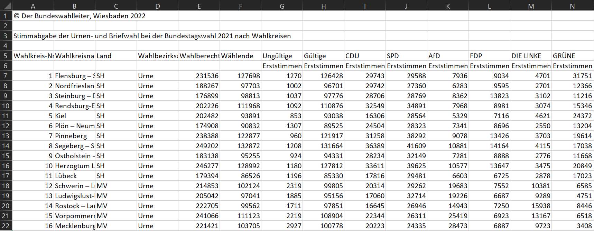

temp_file <- tempfile(fileext = ".csv")
download.file(url = "https://www.bundeswahlleiterin.de/dam/jcr/62868510-b616-443c-97b4-71847916d543/btw2021_brief_wkr.csv",
destfile = temp_file)I recently wanted to check out election results from the last German Bundestag election, and read them into R. The data was saved in a csv file – so far, so good. But the column names were spread over two rows. 😱
This means I’m losing valuable information if I’m only reading the first row of column names. Additionally, the types of the rows get messed up, since the second row of the column names is read as data – specifically, character data.
So, I wanted to combine both rows of column names into one. Here’s how I did it in R.
Data
You’ll find the csv file I was trying to read here. It shows the federal election results, aggregated to the level of the electoral districts. In Germany, you have two votes: the first one is for a candidate, the second one for a party. Here’s a snapshot of the file when you load it into Excel .

You can see two issues.
The copyright information and title are saved in column
A(rows 1 and 3). We can solve this easily by skipping over those rows when we read thecsvfile into R.The column names are spread over two rows: 4 and 5. This issue, we can’t solve that quickly.
So let’s check out the structure of the column names. The columns A–F that only need one row for the column names identify the voting district; the columns that follow identify the results. Row 6 always indicates whether it’s the first or second vote result.
Note
Two-row column names are not always so clearly structured.
So what’s the plan? We want to do the following:
- Read the first column name row.
- Read the second column name row.
- Combine those two rows into one.
- Read the data into R.
- Replace the column names with the combined column names.
Let’s get started 🚀
Preparation
Let’s load the data first. We’ll create a temp_file to store the data, but feel free to download it into any folder you like.
Next, let’s load the needed packages. We’ll use janitor to clean the column names, tidyr and dplyr to combine the two rows, and rlang to set the correct names.
library(janitor)
library(tidyr)
library(dplyr)
library(rlang)Reading the column names
Reading the first row
There’s probably many ways to do this, but I decided to go for the following approach:
- read in the
csvfile starting at the first column name row - clean the column names
- store the column names in a variable
To read in the first row of column names, we can use the read.csv2() function. We’ll skip the first three rows (which only contain metadata) and read in only one row, since we don’t need the content for now. Then, we’ll clean the column names with janitor::clean_names() to make sure that they’re formatted like we want them to. Lastly, I’m removing the numbers that are attached at the end since some of the variable names so far are not unique (since they’re still missing the second row).
colnames_row1 <- read.csv2(temp_file, skip = 4, nrows = 1) |>
janitor::clean_names() |>
colnames() |>
gsub("_[[:digit:]].*", "", x = _) Reading both column names
We could repeat this procedure for the second row of column names. However, it’s better to create a function for this case. We simply take the pipeline from before and put it into a function.
read_colnames <- function(path, skip_rows = 4, no_rows = 1) {
path |>
read.csv2(skip = skip_rows, nrows = no_rows) |>
janitor::clean_names() |>
colnames() |>
gsub("_[[:digit:]].*", "", x = _)
}Combine the row names
Now, we can easily read in both rows of column names using this function. All we need to do is change the number of rows to skip. We’ll put them in a data.frame together so we can manipulate them easily.
To bring the two rows together, we simply check if there’s actually anything inside row_2 (i.e. something that is not parsed as "x"). If there is not, we just take the contents of row_1. Otherwise, we paste row_1 and row_2 together.
rownames <- data.frame(
row_1 = read_colnames(temp_file, skip_rows = 4),
row_2 = read_colnames(temp_file, skip_rows = 5)
) |>
mutate(colnames = ifelse(row_2 == "x",
row_1,
paste(row_1, row_2, sep = "_")))
rownames |> head() row_1 row_2 colnames
1 wahlkreis_nr x wahlkreis_nr
2 wahlkreisname x wahlkreisname
3 land x land
4 wahlbezirksart x wahlbezirksart
5 wahlberechtigte x wahlberechtigte
6 wahlende x wahlendeYay, now we have the column names we want in a single vector – rownames$colnames 🥳 All that’s left to do is to read in the data and replace the column names.
Read in the data and replace the column names
Let’s read in the data. We’ll skip the first three rows and the first row of column names. Then, we’ll replace the column names with the combined column names.
And there we go – a properly read in csv file with two-row column names 🎉
vote_results <- read.csv2(temp_file, skip = 5) |>
setNames(rownames$colnames)
vote_results |>
select(1:2, 7) |>
head() wahlkreis_nr wahlkreisname ungultige_erststimmen
1 1 Flensburg – Schleswig 1270
2 2 Nordfriesland – Dithmarschen Nord 1002
3 3 Steinburg – Dithmarschen Süd 1037
4 4 Rendsburg-Eckernförde 1092
5 5 Kiel 853
6 6 Plön – Neumünster 1307One step further – considering the second row meaning
In this specific data set, the second row of the column names has a specific meaning:
erststimmenindicates the first votezweitstimmenindicates the second vote
We can disentangle the data set to respect this information. Since the names contain underscores that are apart from the one separating the first and second row, we’ll go a bit hacky here and replace the underscore before erststimme or zweitstimme with a dot.
Then, we’ll pivot the data longer to separate the party from the vote type.
vote_results_clean <- vote_results |>
rename_at(vars(matches("stimmen")), ~ stringr::str_replace(.x, "_([erst|zweit])", ".\\1")) |>
pivot_longer(cols = matches("stimmen"),
names_to = c("vote_receiver", "vote_type"),
names_sep = "\\.",
values_to = "vote_count"
)And there we have it – a clean data set with the correct column names and the vote type separated. Yay!
vote_results_clean |> head()# A tibble: 6 × 9
wahlkreis_nr wahlkreisname land wahlbezirksart wahlberechtigte wahlende
<int> <chr> <chr> <chr> <int> <int>
1 1 Flensburg – Schles… SH Urne 231536 127698
2 1 Flensburg – Schles… SH Urne 231536 127698
3 1 Flensburg – Schles… SH Urne 231536 127698
4 1 Flensburg – Schles… SH Urne 231536 127698
5 1 Flensburg – Schles… SH Urne 231536 127698
6 1 Flensburg – Schles… SH Urne 231536 127698
# ℹ 3 more variables: vote_receiver <chr>, vote_type <chr>, vote_count <int>An alternative
I only found out later that there’s actually a whole package dedicated to reading in files with odd formatting, including two-row column names: unheadr. It’s a great package that does exactly what we did here – and more.
If you want to use it specifically for column names with more than one row to them, you can use their function mash_colnames; it does pretty much what we did here, and extends the functionality to column names with more than two rows.
Citation
BibTeX citation:
@online{zeller2024,
author = {Zeller, Sarah},
title = {Reading a `Csv` File with 2-Row Column Names},
date = {2024-05-05},
url = {https://sarahzeller.github.io/blog/posts/reading-csv-with-2row-colnames/},
langid = {en}
}
For attribution, please cite this work as:
Zeller, Sarah. 2024. “Reading a `Csv` File with 2-Row Column
Names.” May 5, 2024. https://sarahzeller.github.io/blog/posts/reading-csv-with-2row-colnames/.